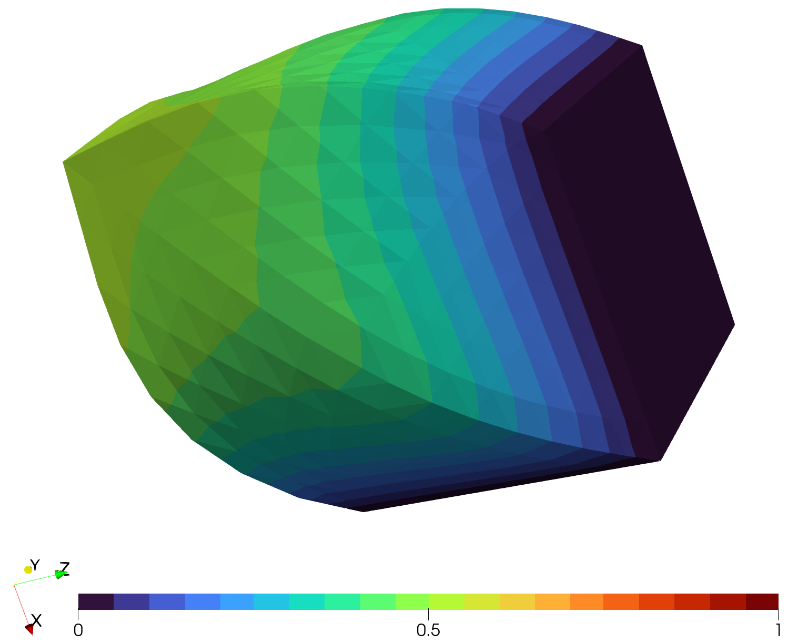

A Vector-Valued Problem
As a vector-valued problem, we will consider a problem in 3 dimensions, where the solution also has 3 components. The general treatment is the same as for the 2-dimensional cases that we have seen before. The dimensions are somewhat hidden in the mesh and the descriptions of source terms and boundary conditions. Thus, we need to use the additional keyword argument qdim to specify the number of components matching those of the function descriptions.
The start of the program is similar to before. Just note that in difference to the Neumann example, we now include the cube.msh mesh and there are now 6 physical boundaries corresponding to the 6 faces to select from.
using PLaplace
output_path = "results/NeumannProblem3DVector/"
mkpath(output_path)
statistics_file = output_path * "statistics.txt"
write_statistics_header(statistics_file, guarded = true)
mesh = import_mesh("../meshes/cube.msh")
neumann_boundary = select_boundaries(mesh, 1003, 1004, 1005)
dirichlet_boundary = select_boundaries(mesh, 1001, 1002, 1006)In general, the definition of boundary conditions works the same as before. Just that the output is now an array instead of just a scalar. In this example, the description of h corresponds
\[h(x) = \Vert x \Vert_2 \, \eta\]
where $\eta$ denotes the outer normal vector and results in a pulling force.
g(x) = [0,0,0]
function h(x)
a = sqrt(sum(x.^2))
if x[1] > 0
if x[2] > 0
return a * [0,0,-1]
else
return a * [0,-1,0]
end
else
return a * [-1,0,0]
end
endSolving the equation and providing output files is now quite similar to the Neumann example. As mentioned before, the only difference is the usage of the keyword argument qdim = 3. This corresponds to the number of components we previously specified for g and h. Note that using this argument is mandatory. Only specifying multiple components in the functions will lead to index-out-of-bounds errors.
p::Float64 = 5
data = solve_plaplace(
p,
mesh,
g,
dirichlet_boundary,
h = h,
neumann_boundary = neumann_boundary,
qdim = 3
)
write_statistics(statistics_file, data)
write_result_to_vtk(output_path * "result_p=$p", data)With the resulting files, you could proceed to visualization. Here, a warped and rotated version of the cube for $p=5$ is shown.
